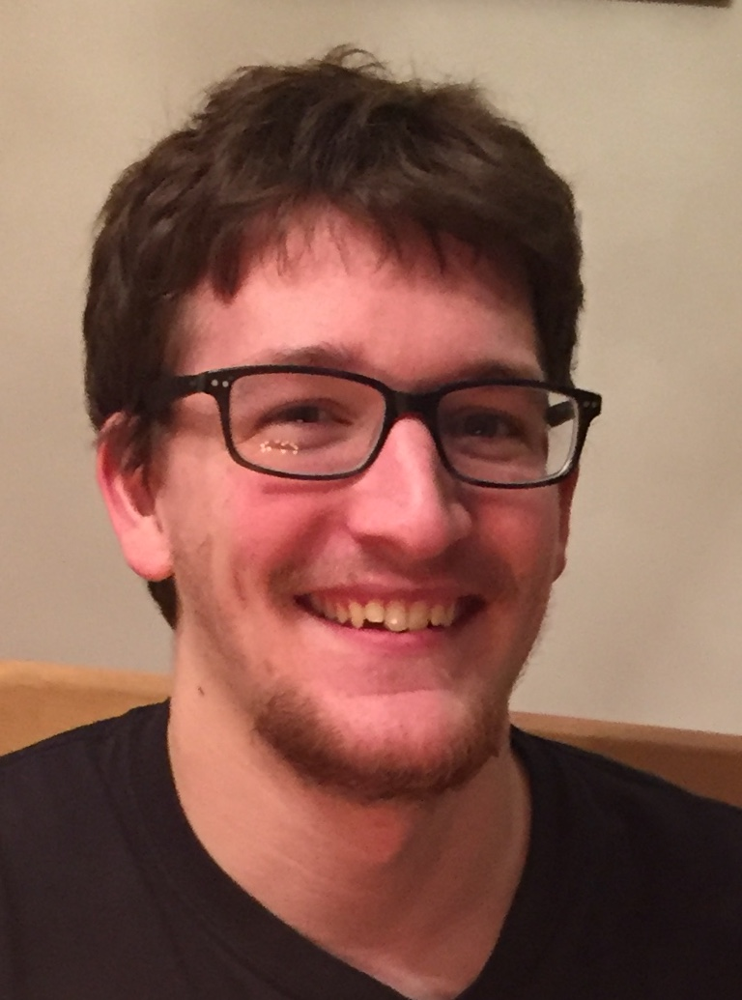
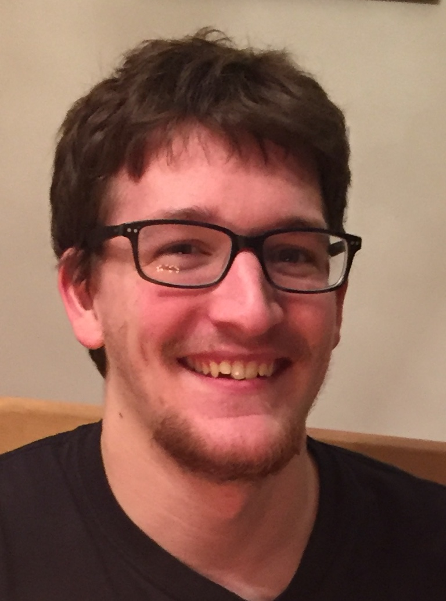

Eric Versaw's Portfolio
Game Developer
I was born in 1996 in Muskegon, Michigan. There I attended Muskegon Community College and received my Associate's in Science and Arts. I am currently in school at Ferris State University going for the Digital Animation and Game Design Bachelor's Degree. I have always loved playing games, and now I love creating them even more. I have learned many skills like: 2D and 3D animation, digital design, game development, interactive design, and much more. I am primarily in the game development track where I focus moslty on computer programming for interactive media.
 I have used all the various tools in the lists below during my years at college. My web development skills were gained from a Summer Internship at Versaco Industries LLC, where I was a Full-Stack Web Developer for multiple websites. My work experience at ADAC Automotive has taught me a lot about Python programming. Using python executables and scripts within Windows 10 or as plugins within Software to "automate the boring stuff" is where I gained my python experience. My main passion lies within the Game Development track. I have loved creating video games and apps using the Unity Game Engine, which I have had experience in since 2019 both in and out of college. Scroll down to check out my technical qualifications and view links to my resume and Github account.
To see some of my work, check out my github account: Versawe
This website will have detailed descriptions, images, and videos of my best work that you may not find on my Github account.
Check out my resume HERE!
 I have used all the various tools in the lists below during my years at college. My web development skills were gained from a Summer Internship at Versaco Industries LLC, where I was a Full-Stack Web Developer for multiple websites. My work experience at ADAC Automotive has taught me a lot about Python programming. Using python executables and scripts within Windows 10 or as plugins within Software to "automate the boring stuff" is where I gained my python experience. My main passion lies within the Game Development track. I have loved creating video games and apps using the Unity Game Engine, which I have had experience in since 2019 both in and out of college. Scroll down to check out my technical qualifications and view links to my resume and Github account.
-
Programming Exp:
- C#
- Python
- HTML
- CSS
- Javascript
- PHP
- mySQL
- Actionscript 3
-
Game Engine Exp:
- Unity
- Unreal Engine 4
- Pygame
To see some of my work, check out my github account: Versawe
This website will have detailed descriptions, images, and videos of my best work that you may not find on my Github account.
Check out my resume HERE!